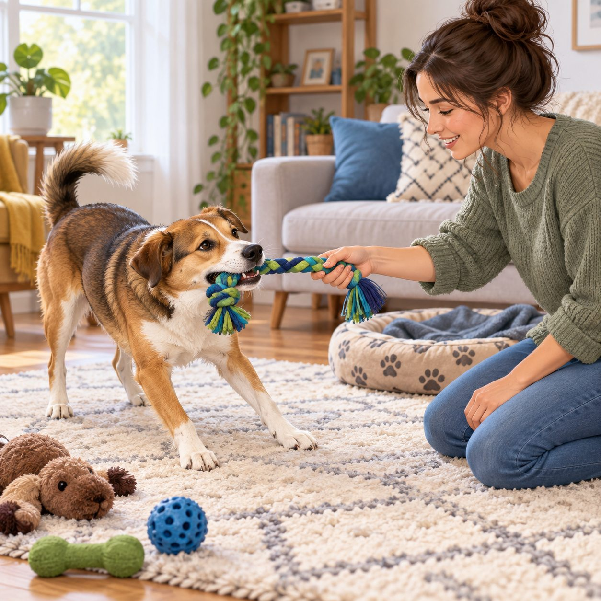
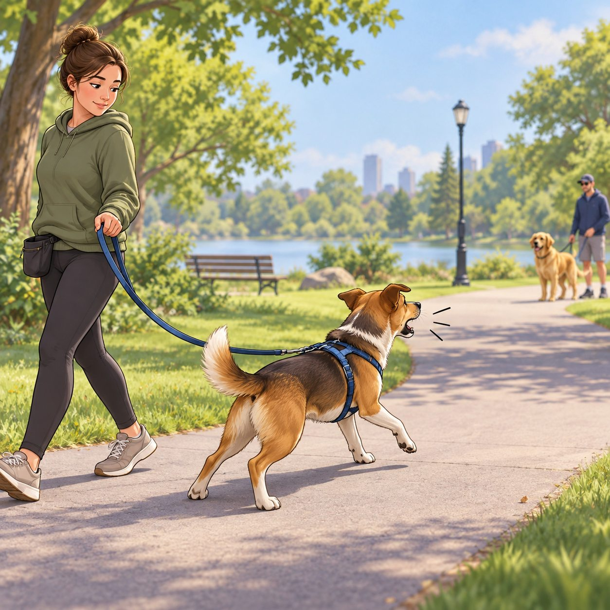
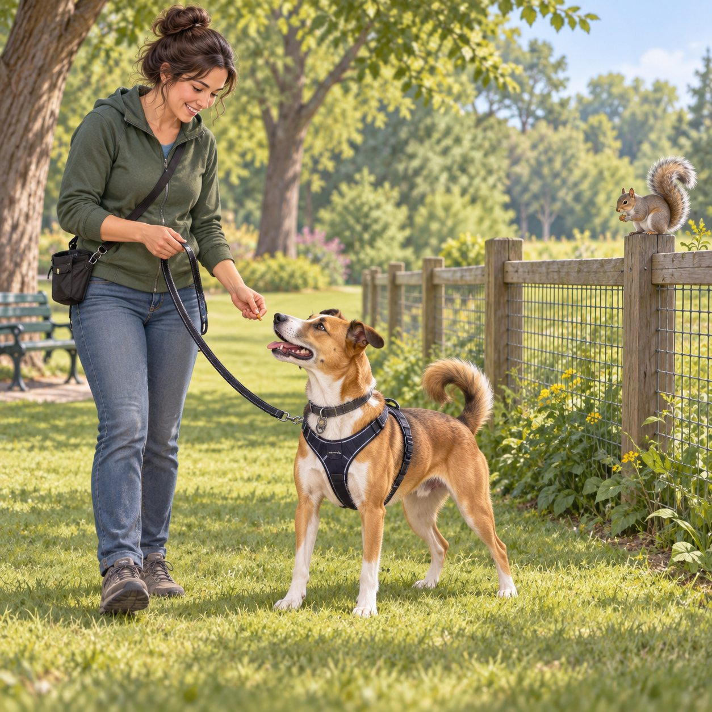
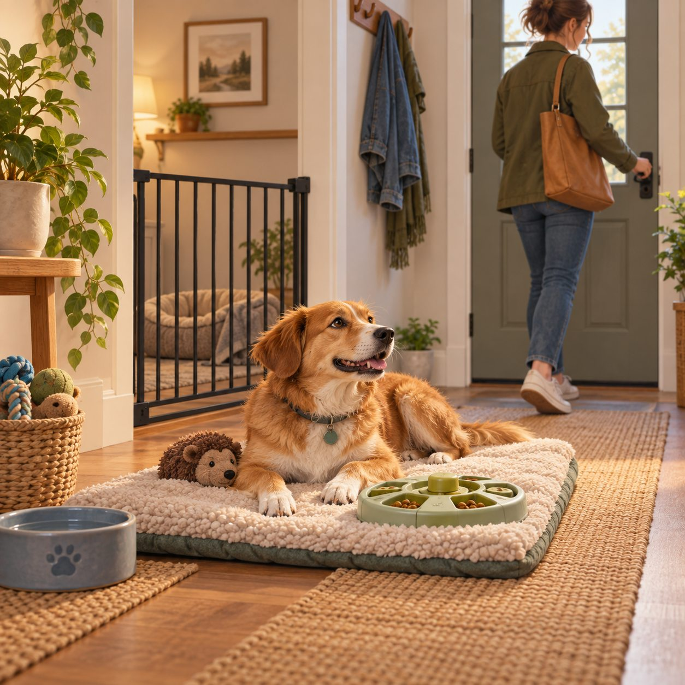

Biting & nipping
Dogs may bite from fear, pain, frustration, over-arousal, guarding, or rough play that has become a habit.
Solution: Stop the interaction, create distance, and redirect to a toy only when everyone is calm. Reward soft mouths and four paws down.
Get help: Any bite that breaks skin, repeats, or appears suddenly needs qualified behavior and veterinary support.
Eating stones & dirt
Scavenging can come from exploration, hunger, boredom, stress, habit, or a medical issue—not stubbornness.
Solution: Use a secure leash, scan the route, teach a calm trade, and bring enrichment that is safe to chew.
Get help: Repeated dirt or stone eating can injure the mouth or gut. Contact a veterinarian promptly if it continues or causes vomiting, pain, or lethargy.
Destructive chewing
Chewing furniture can meet a normal need for exploration, relief, play, or soothing when the right outlet is missing.
Solution: Block access, offer several safe chews, add sniffing and rest, and reward choosing the approved item.
Avoid: Do not punish after the fact. The dog cannot connect a delayed correction to the earlier choice.
Guarding food or toys
Freezing, hovering, growling, or snapping around an item means the dog is worried about losing something valuable.
Solution: Stop reaching, give space, manage meals behind a barrier, and use a professional plan for gradual trades.
Avoid: Never punish a growl or take the item by force; that can remove the warning without removing the fear.

Barking & lunging
Big reactions toward dogs, people, or vehicles often grow when the trigger is too close or the dog cannot escape.
Solution: Turn away early, add distance, reward looking back, and practice below the reaction threshold.
Remember: A quiet dog is not automatically comfortable. Watch the whole body and recovery afterward.

Chasing animals or cars
Fast movement can trigger a powerful chase response that is difficult to interrupt once it starts.
Solution: Use secure equipment, distance, fences, and a long line where appropriate; reward check-ins before the chase begins.
Safety: Never practice near traffic without secure management and a qualified plan.

Separation distress
Howling, pacing, scratching, or panic when alone is distress—not revenge or spite.
Solution: Start with absences shorter than the dog can handle, add enrichment, and build time slowly with professional guidance.
Avoid: Do not “cry it out” through panic. It can make the fear harder to change.
Door dashing
Rushing through doors is often excitement, habit, or a learned way to reach something outside.
Solution: Add a gate, teach a mat wait, reward pauses, and clip a leash before opening an exterior door.
Remember: Prevention protects the dog while the skill is still being learned.